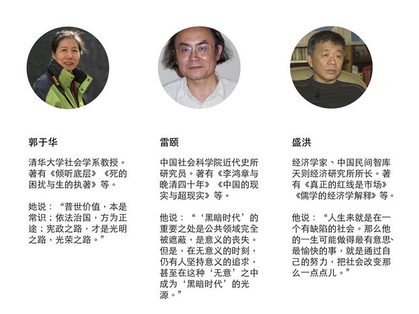
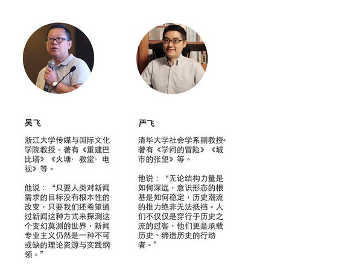

我们说一说教育平等的问题 | 我们如何与未来相处⑨
 好奇心日报 2018-06-16 07:32:02
好奇心日报 2018-06-16 07:32:02
本文作者： 曾梦龙
“有时候，关键不是去改变世界，而是去解释世界。”
在某个关键时刻，关于如何解释这个世界，如何与未来相处，我们需要听听睿智、独立的声音。
我们邀请了经济学、法学、社会学、传播学等领域的 20 余位专业人士，回答了我们的问题。
问题纷繁而且复杂，但与年轻一代的未来生活息息相关。被访者希望，留给未来年轻一代的这个世界运转良好而且文明进步；在复杂而且迷茫的世界中，保持独立与理性。
来自于清华大学的郭于华和严飞都提到本校社会学系的晋军老师的一个长时间观察。他每年都会给大一同学们上一门叫“社会学概论”的课。在这一门课上，他会统计同学的家庭背景，比如父母工作，家庭收入等。“他就发现，清华大部分的学生都来自于中产家庭，而来自于真正的寒门或者是贫困家庭学生的数量，确实是在过去的一段时间里面是有在减少的趋势。”严飞说。
这个结论印证了 2017 年北京高考状元熊轩昂的观点。他在接受采访时称：“我觉得农村地区的孩子越来越难考上好学校，我是普通家庭长大的，但是衣食无忧，父母都是知识分子，而且在北京这种大城市，在教育资源上享受到这种得天独厚的条件可能是外地孩子或农村孩子所完全享受不到的，这种东西让我在学习的时候可能相对来说能走一些捷径。近几年的高考状元，也很难再看到农村里面供养出来的，很多都是家境又好，自己又厉害的人。”
我们的话题是从阶层流动性减弱说起的，多位高校背景的学者都把目光投向了大学里的农村学生越来越少的问题。雷颐给出一个确切的时间节点： 1997 年。
大学教育的平等问题是资源分布和资源垄断的一个结果，背后是城乡二元化的问题，再进一步则是如何理解城市化——这其中当然也包括逆城市化——的问题。
阶层固化，或者说阶层流动性不畅皆由此而产生。
我们看到，一方面，因为主政思路的差异，对城市的理解差异可能在未来相当长时间里会影响到城市化的思路；另一方面，各地蔓延至今的抢人大战也凸显了在城市化过程中问题的复杂性：除了北京上海这几个超一线城市之外，年轻人口的缺乏成为中国绝大部分城市未来发展的掣肘力量……可能不仅于此，就像我们另外一篇稿子中上海财经大学教授陈媛媛所认为的那样，虽然眼下城市都在抢高端人才，但在五到十年内，它们就会意识到低技能劳动力的重要性，“它们会为此付出代价的”，她说。当经济弊端显现，到时候城市之间，最终可能“是个人就抢”。
也许到那时，教育资源、城市资源分配才会因为迫切的老龄化社会问题而真正开始扭转。
阶层固化和流动，涉及甚广，这一篇是从教育开始。
【1. 为什么高校在 1997 年之后农村生源在减少？】
雷颐 中国社会科学院近代史所研究员
他们上大学、上研究生，有的打三份工，当家教，还要供养自己的弟弟或者什么的。这是不是素质？在贫困的条件下，刻苦读书，还给家庭解决困难，这叫不叫素质？难道只有钢琴的等级是素质？
首先，我觉得恢复考试和没有考试比，还是有一些下层的或者是底层的考上来。当然存在贫富差别或者阶层差别，偏远地区和城市，甚至是一个大城市内部，差别都很大，重点非重点学校什么的。为什么现在一说，东城、西城和丰台、门头沟比，差别就很大。你更不要说市区和农村比，北京和其他地方比。这个资源要解决起来很困难。
我觉得，首先最关键的还是什么？供给侧。优质教育资源是稀缺的。这是一个外在的约束条件。在这种优质教育资源稀缺条件下，怎么样让贫困地区孩子、贫穷阶层的孩子也能够上这种学校？我觉得首先要尽可能地开放教育，允许民间资本或者其他资本进入教育领域，只要你开放了，时间够长，会产生出很优秀的民间学校。实际上，现在好多民间的小学、中学已经表现出来。如果你大学也完全是开放，经过若干年，就会培养出一些好的、非国立的、非政府的好大学。这就是如何把一个优质教育资源、稀缺资源越做越大，竞争少一点，更多阶层的人都能上了。
那么，在没有开放之前，资源很紧缺情况下，怎么选择？现在确实应试教育弊病太多，但是很多人说就要用素质教育（解决）。 1997 年一（提）出来，我就坚决反对素质教育。因为中国一说素质教育就是钢琴和奥数如何？学的外语有没有考一个什么等级？甚至画画、钢琴这些。这些都是富人家的孩子，越富裕越能够把自己孩子在这些方面进行培养。穷人家的孩子，这些都上不起。我就是拼命地读书。在高考的过程中，那些东西占的比重越来越大。那么，从前一个贫穷家的孩子，我就是在一个偏远的地区死读书，课外书我家都买不起，只能买几个课本。读书，我考了好成绩，结果我占的比重反而越低了。
所以，我一直还没写想写的文章。为什么说 1997 年起，城市好的大学里面，农村的孩子越来越少？就是从 1997 年起，提出来素质教育——富人的孩子会跳舞、钢琴……什么叫素质？我总举个例子，我认识的有几个研究生，都是来自很贫穷的地方。他们其他东西都不太会，就是一个死读书，考上了北京的研究生。
现在，贫穷的孩子在他们读小学、读中学的过程中，不断地要去干点活，给家里减轻负担。他们上大学、上研究生，有的打三份工，当家教，还要供养自己的弟弟或者什么的。这是不是素质？在贫困的条件下，刻苦读书，还给家庭解决困难，这叫不叫素质？难道只有钢琴的等级是素质？那么，那些孩子恰恰在人们的心目中被认为是素质不高的。实际上，我觉得他们是最有素质。
所以，我很感动一件事。有一次到北大去演讲，快到会场的时候，有一个女学生在等着我。她说，我就想见见您。演讲完了，她又送我，走了很远。她有话要对我说，她说她是来自河北石家庄一个重点中学毕业的。她的小学、初中是河北的一个偏僻农村读的，但学习成绩好，就到了省里的重点高中。一到那，她马上就觉得那些他们同类的，几个一起从农村来的，和那些从小就在石家庄长大的孩子就不一样。那些女孩子，能歌善舞，英语口语好，特别明显。当时实行教改，中学校长可以推荐什么的。每次推荐就是那些跳舞好的，钢琴弹得好的，没她们的份。她们在整个舆论中，就成为一个所谓的只会考试的考试机器。恰恰是看了我的文章，她内心觉得很感动，一下子打动了她，心里觉得我们才是真正素质高。
来自那么贫寒地区，能够考到一个省立高中，实际上是很不容易的。这不是素质吗？不是一种坚强刻苦吗？因为在她原来的高中，像他们这种来自农村的还是少数，就更加觉得被排挤，在边缘，自己也无形中有一种自卑。而看了文章，她说至少是它取消了这种自卑感，并且在他们同学中传播。后来，她还考上北大的硕士、博士。
所以，最重要的还是教育资源分配的平等和供给的增加。最关键的是，在现有条件下你怎么分配资源？所以，当时 1997 年（素质教育）一出来，我就出了一个文章，叫《教育首先要防止“更坏”》。要争取更好，首先要防止更坏。结果证明，现在有几个对这个（教改）满意的？包括这些城里的人，给自己小孩上这个班，那个班，花了那么多钱，心里也不满意，觉得我累得要死，花这么多钱。因为现在你升学，你不考试，我怎么录取学生？那我只好谁有钢琴几级？谁有奥数几级？我才知道，那考奥数，很多家长都做不出。现在好多小升初，规定初中部不许考试。你不去考试，那学校就说，好比有十个孩子，我只能录取六个，我怎么录取？凭什么？有几种方式：凭权力、凭金钱、凭考分、凭钢琴。你居然把考分去掉了，那么只能凭钢琴、奥数。那么，所有的家长都极不满意。大人累，孩子更累，上若干个班。
【2. 教育公正是一个值得认认真真讨论的问题】
吴飞 浙江大学传媒与国际文化学院教授
阶层或者阶级不平等，毫无疑问肯定存在。不同阶层、不同社会地位，接受教育的可能性也完全不同。
阶层或者阶级不平等，毫无疑问肯定存在。不同阶层、不同社会地位，接受教育的可能性也完全不同。所以，像考到北京大学的可能性很不一样，比如浙江考生和北京考生要考北大就不一样。这里面确实是一个非常复杂的工程。比如说像王健林，他的孩子能够接受更多更好的教育，这是一个很正常的事。不能说你是首富，不能够接受那么好的教育。这个也是不平等的，不能剥夺有权势的人来满足自己。这是第一个层面我们要注意的问题。
但另外一个层面，社会主义国家更多讲究公平和公正。因为我们财富都是公共财富，从这个角度来讲，我们要建构这样一种机制，确实要让很多贫穷孩子有向上流动的可能性，要敞开。这是一个双重的困难，其实我提不出一个特别好的解决方案。如果我连温饱问题都没有解决，然后一定要让这个孩子能够上北大，他怎么去做到？杭州市或者北京市这些优秀的老师也不愿意去乡村。就算把教室建得好好的，工资跟北京一样，他也不去。你怎么去解决这个问题？这个好像不是那么很简单，拍拍脑袋就解决了教育公平。它是一个非常复杂的过程。
当然，也许未来互联网会提供这样一个可能性，让我们一个穷苦的孩子也可以接受北京最优秀师资的教育，是不是有可能？当然，我们只是力图在制度的建设上面去提供一个可能。但假如我是教育部部长，我也解决不了教育不公正问题。挺难的。
我觉得这几年中国在对公正或者公平的理念上，其实已经有一个很大变化。早期中国人都是想“彼可取而代之”，老是想着我们“均贫富”，然后“分田地、打倒土豪”。现在估计这种想法的人少了。中国很多人在这个层面上已经发生了改变了，但教育公正仍然是一个值得很认认真真讨论的问题。至少我们要让那种特别穷的孩子，一点学都上不了的孩子，有一个接收基本义务教育的可能，这个是国家应该做事情的。至于他最后是上北京大学，还是浙江大学，还只是一个普通职高，那是另外一回事。
所以，我觉得那个起步点上是最重要的。义务教育本身不能让别人缺失。当然，我自己做一些调研以后发现，比如我自己做独龙族（调研），一个少数民族地方，那些孩子他自己读书（读得）不想读了，他觉得没意思，不想读。当然，另一个原因在于他觉得他读书后也不能够在很大层面改变自己未来生活境遇，所以他们失学就回家了。这也是一个问题。但实际上对那些少数民族，国家也有很多政策。你考最低分，甚至比一般城里孩子分要考得低一点，他也可以上一个不错的学校。其实有些民族政策都是有的。
（农民工子女的教育问题），这是我们国家在设计的时候，有很大的问题。因为现在很多农民工进城了，他的孩子肯定要跟着父母在一起，这本来是人之常情，教育必需的。父母缺失的教育，肯定是不完整的。这些孩子上学的问题，就是一个很大的、国家需要下力气才能解决的问题。
我觉得这一点好像杭州做得相对比较好，北京似乎很难。可能北京外来人口特别多的缘故，杭州基本上哪怕就是一个打工的孩子，也就近跟城里的孩子一样上学，只是也有些限制条件，现在越来越严了，比如要租房子时间多长，暂住证时间多长，但不管怎么样，提供了让孩子不失学的可能性。北京的人口（问题），（政策）可能一刀切解决了。这个事情我是不太懂，我都不懂是谁能够做出这种类型的决策？难道它没有一个科学论证过程？很奇怪的。
所以，这就是我们在官方治理和管理过程中间存在的一个很大障碍，可能会是一个领导人拍拍脑袋就变了，也没有做过一个决策听证会。我觉得有的时候，哪怕涉及一个人利益的时候，你都要认认真真（处理）。这个东西特别无厘头，我觉得不清楚，特别不能够想象。
【3. 留守儿童问题比我们现在看到的情况还要复杂】
严飞 清华大学社会学系副教授
在打工子弟学校上学的这些学生，他们到了高考或者是中考的时候，还是要回到他们的原籍，回去再考试。那回去以后，有些是可以真正出来，但绝大部分还是没有办法出来。没办法出来，他们就变成了城市打工子弟二代。到了 16 岁、 18 岁，跑到城市里面继续开始打工的生活。他们这一代的思想状态和人生设想，就和他们的父辈完全不大一样。
清华大学有位老师（晋军），他每年都会在大一的时候给同学们上一门课，叫社会学概论。然后在这一门课上，他会统计今年的大学生他们的家庭背景，比如说你父母来自什么样的工作职位，家庭收入如何。他就发现，清华大部分的学生都来自于中产家庭，而来自于真正的寒门或者是贫困家庭学生的数量，确实是在过去的一段时间里面是有在减少的趋势。
（关于留守儿童问题，）我自己了解到的是，他们在当地城市因为没有办法去到公立学校上学，所以只好上打工子弟学校。因为他们第一，没有钱去私立学校，只能就近去公立学校；但是又没有当地的户籍，所以也没有办法进公立学校。最后只能自发地去打工子弟学校。打工子弟学校因为校舍建造、教育质量问题，会处在政策的边缘地带。北京、上海这些政府说可以把你关掉，也可以说睁只眼闭只眼，容忍有些学校让你开。但这里面最大问题是在打工子弟学校上学的这些学生，他们到了高考或者是中考的时候，还是要回到他们的原籍，回去再考试。那回去以后，有些是可以真正出来，但绝大部分还是没有办法出来。没办法出来，他们就变成了城市打工子弟二代。到了 16 岁、 18 岁，跑到城市里面继续开始打工的生活。他们这一代的思想状态和人生设想，就和他们的父辈完全不大一样。
（虽然我们说的是现状问题，）但实际上好像是过去 20 年时间里面，中国转型社会当中很多的阵痛带来的一些潜在的影响。
（包括高考，大家觉得需要高考，但总觉得高考不公平。）所以现在有自主招生，但自主招生里面也会有很多（问题）。自主招生的话，更加会倾向于那些中产阶层，就意味着你需要有视野，需要阅读很多的书，而不是单纯地会应试。衡水中学的模式只是适合参加考试，全国一张试卷，但是自主招生会更加倾向于北上广深的这些一线城市中产阶层的孩子。
【4. 大学获得资源的不同，决定了大学带来向上流动的可能性差异极大】
严飞 清华大学社会学系副教授
同样都是大学生，但实际上并没有解决他们更大的问题。等到他们大学毕业以后，实际上还是会慢慢地滑入社会的中下层。
（但是新的问题也会产生，）清华大学每年都会有资助贫困生源的指标。生源指标是固定的，或者每年有所增加，会保证来自农村的孩子有机会到清华大学来上学。来了以后，我们会发现有这样的问题，清华都是最优秀的学生，很多学生是来自不同省份的一些状元，或者是排名前五、前十的这些学生，聚在一起以后，大家就会彼此竞争。在竞争的过程当中，就会产生巨大落差，特别是对于这些来自偏远地区或者来自所谓寒门的这些人。因为他们这些学生除了成绩好以外，和其他学生比较时会发现，比如说北京中产阶层的孩子，他可能在大一入学的时候就已经周游了世界，在海外有交换项目，有苹果笔记本，会读很多课外书，等等。但是对于这一位学生来讲，他可能是第一次来北京，从来没有接触到苹果的产品。所以，他的视野和阅读深度都没有这些中产阶层家庭的孩子好。
这样，他们就会产生很大的心理落差，就会更加拼命学习，觉得可以通过学习来弥补。但是，在网络化时代，有时候并不是简单地记笔记和学习，就可以在短期里面减少这样的落差，而是需要不断地去拓展自己的视野，参加很多社团活动。
所以，清华也在想办法，我相信其他学校也在做很多类似的事。我们会给学生提供很多的海外研修、实习、交换、交流这样的项目，给他们经费资助，让他们去印度、阿根廷、瑞典、比利时这些国家去交流、交换，拓展他们的视野。对他们其实也是一种提升。
至少在大一这个阶段，真的是发现这些来自寒门的学生会有一个更加巨大的落差，心里面会显得非常的自卑，自卑之后就不愿意和别人去交流，或者会走一些极端。但是我们会发现，到了大二、大三，特别是经过大一、大二不断的社团活动熏陶，经过这些各种交流、交换项目的提升，会让他慢慢地和其他孩子缩短差距。这是目前来看可以想到的一个比较好的办法。
（但是，他们已经考上清华，已经和大多数人不一样了。）他们在这样的环境，也会感到会自卑。但是，他们走出清华，和其他人一比，就会觉得我还是不错，我是清华的，对不对？还是会有这样的差距。
但是，从整体社会流动上面来讲，我觉得最大的问题是会发现和前面说的建设“双一流”、学科评估实际上会有紧密联系。因为国家的经费、资源都放在这些所谓“双一流”学校之上。这也意味着很多非“双一流”学校，甚至很多更加往下的三本、专科的一些学校，他们获得经费资源非常少。伴随着大学的扩招，大上学早已经不是一件奢侈的事情。但如果去到非 211 、 985 类别的学校，甚至是一些从来没听过名字的大学，那在这样的大学里面，它实际上就会导致一种结构性差异。学生们就成为了整个教育的一个牺牲品，难以接受优质的教育。他们和其他一些“双一流”、得到国家政策扶持，有资源的这些学校相比，差距就越来越大。他们在这样的环境里面，实际上，你说他往上流动了，确实也有这样的流动，从农村地区到三四线城市的一所大学里面去上大学，他也有往上流动。但是流动的这种程度，实际上对他本身自我的提升没有太大的帮助。从这层意义上来说，这样的教育投资是不划算的。
同样都是大学生，但实际上并没有解决他们更大的问题。等到他们大学毕业以后，实际上还是会慢慢地滑入社会的中下层。
【5. 为什么说高校没有自主权的时候，高校自主招生会加剧不平等？】
盛洪 经济学家、中国民间智库天则经济研究所所长
我听过一些信息，比如一个学生的父亲在国家发改委工作，自主招生拿到北大 30 分，拿到人大 30 分。当然这肯定是不对的。这 30 分怎么来的？他爸是国家发改委的，学校还等着他们批钱。
谁来决定高考？谁来决定谁去上什么学？第一，高校资源的分布就不合理了。北京有过多的高校资源，以省市为单位来考试和分配录取名额，虽然说这个学校是全国的，但是实际上北京考生清华北大的几率要比外地学校高很多，上海学生上复旦、同济的几率也偏高。北京的一个考生上一本的几率是四川考生的 5.2 倍。更加上还有一些政策，比如像自主招生。自主招生就是一个巨大的腐败。我早就批评过，在高校没有真正自主的时候，你搞什么自主招生，这不是很可笑吗？那一定不是自主招生。只是打出一个非常好的名字。为什么？行政管理上级一定会操纵的，这毫无疑问。所以，我听过一些信息，比如一个学生的父亲在国家发改委工作，自主招生拿到北大 30 分，拿到人大 30 分。当然这肯定是不对的。这 30 分怎么来的？他爸是国家发改委的，学校还等着他们批钱。这很不公平。对外地和农村的学生更是不公平。自主招生对家住北京的人就更有利。家住新疆，还得跑一趟，成本肯定高；如果还是新疆农村的，就更麻烦了。所以这个政策，从公平上来讲，是有巨大问题的。
【6. 教育的不公平来自于结构上的不平等。如何看待平等，以及贫富差距和市场】
郭于华 清华大学社会学系教授
有人说，废除高考。你要把这个废了的话，我觉得重要官员的孩子全进大学了，农民更没戏了！
其实清华，我们社会学系的晋军老师，他带着本科生做了好几年的观察。每年新生入学以后，他们都会发一个问卷，让新生来看来填。你可以发现一个趋势，可能不光是清华、北大这样的学校，重点大学都有这种趋势，就是农村来的孩子比例下降。
我记得 1980 年代我们读大学的时候，班里农村生源占的比例相当高。这些年其实有明显的下降趋势，确实有“寒门难出贵子”这样一个东西。因为整个城乡之间二元结构是不公正的，那必然造成整个教育资源是不公正的。至于说到阶层固化，今天或者说贫富差距也是很多人特别担忧的问题。
但是，这里面要有一个区分。你怎么看贫富差距？如果你从马克思那套理论出发，当然贫富差距不可容忍，就是要拉平了，一直以来阶级斗争这套东西。我觉得有这么几个问题，一是贫富之间有差距，是不是一个社会正常现象？它应该是有一个正常的（差距），肯定不可能大家均贫富。任何社会都是如此，都有阶层分化，都会有贫富差距，都会有收入分配差别。你得正确理解“平等”是什么意思？“平等”指的是人们在权利上平等，在法律面前人人平等，在基本的权利上面是平等的，在机会上应该是平等的。比如说今天的教育就不平等，因为北京、上海考分低一点就可以上大学，那些其他外省，有的高考要很高的分才能考上大学，这就是不平等。
但是，这个平等绝对不是分配平等，不是结果平等。因为结果不可能平等，人和人都不一样，所以任何社会不能强调最后人的财富平等、社会地位平等。不可能。因为一定不一样，比如你在绘画方面有才能，我可能在体育方面有才能，不可能要求大家都一样。只要是一个自由竞争的市场经济的话，必定是不平等，结果是不平等的。
这是一个需要弄清的问题，而不是说打着一个平等的旗号就 OK 了，万事大吉。因为恰恰是像（共产主义运动）弄这套东西，恰恰是用一个平等旗号，实际上去剥夺所有人的权利。它可以用一个什么天下大同，大家均贫富这种，最后大家的结果一定是共同贫穷。确实平等了，大家都一样穷。那个过程我们已经经历过了，不可以再走回去。
再一个，对今天这个社会，当然你说贫富差距极大，这是有问题的。贫富差距过大，大家今天会用基尼系数来衡量，你一个社会如果贫富差距超过一个值的话，它就进入危险状态，这个也确实要去意识到。但是造成贫富差距过大的原因是什么？这个要把它弄清楚。不同制度的社会原因不一样。比如说有的社会，可能就是市场造成。当市场造成（这个结果）的时候，可能就会有一些其他安排，包括救助、福利、保障。你不能让穷人活不下去了。你还得给他一些，无论用慈善的方式，还是用保障的方式，还是用政府其他转移支付的方式，去给人家一个能够生存（的条件）。但是它不是一个简单的拉平。
而中国的贫富差距到底是什么造成？这是我们要去思考的，你要去追究的。它是市场经济造成的？不是，我不认为是。它就像有些左派说的，就是资本造成的。我觉得完全不是，恰恰是一个不完全市场经济——一个权力主导的市场经济造成的！今天的贫富差距最大的体现在哪儿？体现在官民之间，体现在那些特殊利益集团和广大民众之间，那是最巨大的差距。但是，这个问题上往往有混淆，就是那种传统的阶级斗争思路造成的。什么杀富济贫？他冲着企业家去了，冲着人家私企去了。私企是今天中国掌握资源、掌握财富最多的人吗？私企非常脆弱，好多今天都不知道明天的饭在哪儿。你进一步国有化，进一步由这种特殊利益集团掌握国家的经济命脉，掌握那些最大的企业最大的收益，这是极大的不公平。所以，中国的贫富差距是在这儿。而且造成的原因恰恰是利用权力攫取财富，去扰乱市场经济，去控制市场经济，是这个造成的。
所以，我觉得我们确实要特别警惕这一点。而不是像一些左派说的，市场经济是万恶之源。那不是，今天我们国家和西方社会面临的贫富差距是不一样的问题。
（教育的不公平也是一样。）现在我觉得真的挺难单独解决某一个方面的问题，全是结构性问题，它是方方面面的。今天可能也有一些（变化），比如说从恢复高考制度以后，每年全国统一高考什么的，这些年也有一些改变，也有一些地方，比如说自主招生这种方式。但我觉得你在这个结构性问题没有解决之前，自主招生也不能够完全解决这个问题。因为自主招生完全也可以，你学校当然希望找到最好的学生，对吧？最好的学生肯定是不会来自于（贫寒阶层）。（当然），个别的也有。但是你依然不可能通过这种小的调整，从根本上去解决。你说通过考试，公平竞争来录取，还是一个最基本的方式。有人说，废除高考。你要把这个废了的话，我觉得重要官员的孩子全进大学了，农民更没戏了！
（后续报道，陆续更新）
本篇报道涉及访谈对象：


制图：冯秀霞
题图为电影《放牛班的春天》剧照，来自：豆瓣